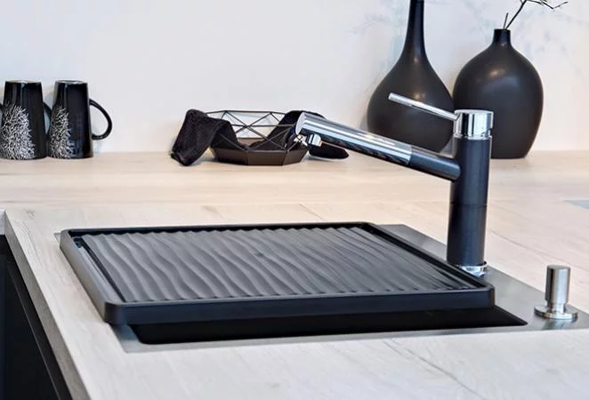

When we talk about the design of a kitchen to live in, we think of its
beauty but also of its functionality. Because when every element is
ingeniously designed, it's life changing.With opening systems that
adapt to the space, with perfectly organized and accessible storage
systems, you no longer waste time. And you gain in comfort, efficiency
and cooking pleasure.
Natural stone work surface
An essential element in any well-appointed kitchen, the worktop is not
chosen lightly. Thickness, depth, height, material, color, design...
are all criteria to take into account before getting started. In other
words, it is essential to choose the right work plan. Decorative, the
work plan must also be tough to withstand shocks, scratches, humidity,
heat, which are the daily life of a living kitchen. From the compact
10 mm plan to the thick 100 mm plan, quality comes in all forms.
SINKS and FAUCETS
The sink, a central place in your kitchen 70% of the tasks performed
in a kitchen take place around the sink: defrosting, cutting, washing,
draining, garnishing dishes, and very often… doing the dishes. Both
very busy and little spared, you might as well choose the sink that
suits you best.
Which material should I choose for my sink?
Stainless steel for its style and incredible performance: solidity,
hygienic surface, corrosion resistant.
Ceramic for its robustness and ease of maintenance: it is available
in several colors
The composite for its aesthetics, its ultra-resistance and its ease
of cleaning.
